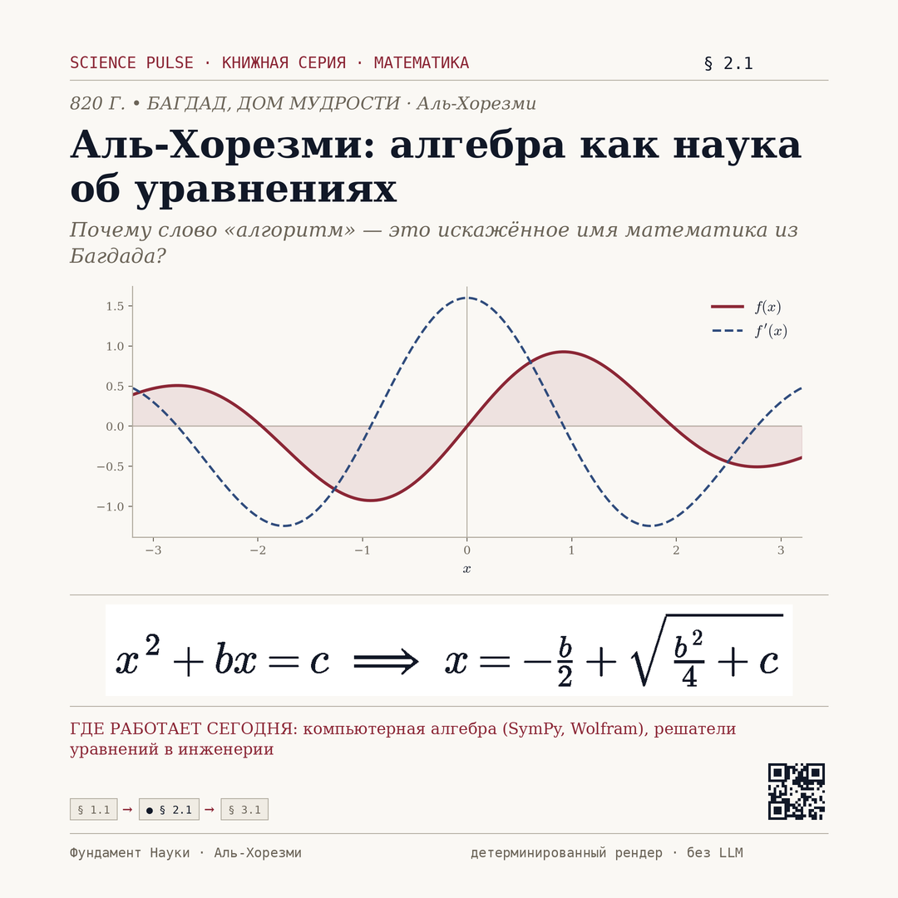

Аль-Хорезми: алгебра как наука об уравнениях
Почему слово «алгоритм» — это искажённое имя математика из Багдада?
Параграф развёрнут полностью и выйдет в ближайшем слоте эфира (09:00 · 13:00 · 17:00 · 21:00 MSK).
z = 0 · Граница / Импульс

z = 1 · Интуиция и генезис
I. Исторический контекст и постановка задачи
820 г. • Багдад, Дом мудрости · Аль-Хорезми.
Ключевой вопрос: Почему слово «алгоритм» — это искажённое имя математика из Багдада?
В трактате «Краткая книга об исчислении аль-джабры и аль-мукабалы» Аль-Хорезми впервые описал преобразования уравнений как отдельную науку: перенос членов из одной части в другую и приведение подобных. От слова «аль-джабра» произошло слово «алгебра», а от латинизированного имени учёного — «алгоритм». Метод решения квадратных уравнений он изложил словами, без символов, но по сути это та же формула, которую сегодня записывают через дискриминант. Алгебра превратила математику из набора приёмов в систему правил: если преобразования равносильны, решение можно найти механически. Именно эта идея через тысячу лет стала основой компьютерной алгебры.
В трактате «Краткая книга об исчислении аль-джабры и аль-мукабалы» Аль-Хорезми впервые описал преобразования уравнений как отдельную науку: перенос членов из одной части в другую и приведение подобных. От слова «аль-джабра» произошло слово «алгебра», а от латинизированного имени учёного — «алгоритм». Метод решения квадратных уравнений он изложил словами, без символов, но по сути это та же формула, которую сегодня записывают через дискриминант. Алгебра превратила математику из набора приёмов в систему правил: если преобразования равносильны, решение можно найти механически. Именно эта идея через тысячу лет стала основой компьютерной алгебры.
V. Инженерное применение в XXI веке
компьютерная алгебра (SymPy, Wolfram), решатели уравнений в инженерии
z = 2 · Формализм
II. Аналитическая модель и экспликация величин
Формула: x² + bx = c ⇒ x = −b/2 + √(b²/4 + c)
z = 3 · Симуляция
Профиль сонификации: ⠀⡇
Интерактивная лаборатория
Просветительская задача для самопроверки
Чему равна c при x = 2?
Подсказка: Подставьте значения: x = 2, bx = 1.
Ответ: c = 5. Точный расчёт ядра: x² + bx = c при x = 2, bx = 1 даёт 5.
III. Вычислительная верификация
Задача для самопроверки: Чему равна c при x = 2?
Ответ ядра: c = 5. Точный расчёт ядра: x² + bx = c при x = 2, bx = 1 даёт 5.
Песочница кода: кода нет
Печать версии (merkle v1): 8432124dc2e4df71ec6b88ffa5e2bf1c…
z = 4 · Сертификат истины
Вычислительный паспорт
- Код: верно кода нет
- Печать (merkle v1):
8432124dc2e4df71ec6b88ffa5e2bf1c…
IV. Связи в дереве фундамента науки
Опирается на: pythagoras.
Родословная первоисточников: первоисточник — аль-Хорезми, «Китаб аль-джебр валь-мукабала» (ок. 820 г.); академический свод — NIST DLMF (Digital Library of Mathematical Functions) · Lean 4 Mathlib; цифровой узел — Фундамент Науки · Аль-Хорезми. Библиография: https://ru.wikipedia.org/wiki/Аль-Хорезми.